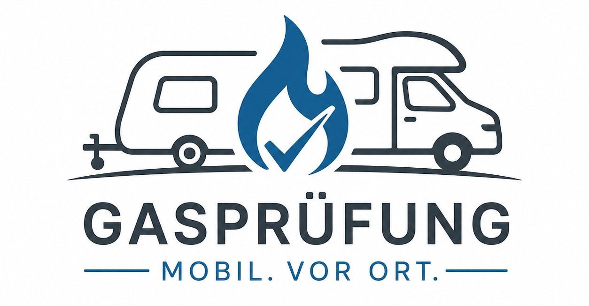

für Wohnmobile und Wohnwägen – bequem bei Ihnen vor Ort
Ich biete eine professionelle und mobile Gasprüfung für Wohnmobile und Wohnwägen nach den gültigen Vorschriften an. Die Prüfung erfolgt direkt bei Ihnen vor Ort – zu Hause, auf dem Stellplatz oder auf dem Campingplatz.
Durchgeführt von einem DVGW-zertifizierten Sachkundigen für die Prüfung von Flüssiggasanlagen nach DVGW-Arbeitsblatt G607.
Ich bin mobil im Raum Stuttgart und Umgebung unterwegs – u. a. Leinfelden-Echterdingen, Filderstadt, Steinenbronn und Umkreis. Größere Anfahrten nach Absprache.
55 € Festpreis inklusive Anfahrt bis 25 km ab Steinenbronn
Terminvereinbarung telefonisch oder per E-Mail
📞 Telefon: +49 151 67082194
💬 WhatsApp: +49 151 67082194
📧 E-Mail: teutschlaender.martin@web.de